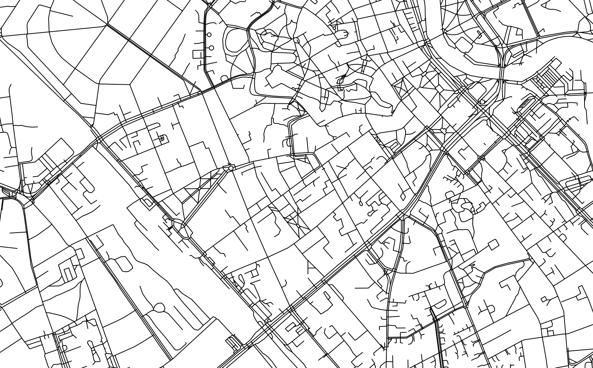

Lühimat teekonda otsides
avamerelpreso/
gispaev-2022/
Kui meil on kaks punkti ...

Siis lühim tee nende vahel on ...

Küsimused?

sest ...
(alati ei ole)
teekonnaarvutus
(routing)mööda teid - lihtne
(või noh, suhteliselt lihtne)

- OSRM https://project-osrm.org/
- GraphHopper https://www.graphhopper.com/
- Valhalla https://valhalla.readthedocs.io/
- PgRouting https://pgrouting.org/
tipud (nodes) ja
kaared (edges)
kaared (edges)

en:User:Chmod007
, Public domain, via Wikimedia Commons
optimeeri teekond läbi sõlmede rägastiku
(teepikkus? kuluv aeg? ilusaimad vaated?)
teekonnaarvutus avamaastikul?
jah, miks mitte
(aga vaja arvutada graaf)
Kuidas?
päris hea kokkuvõtte teeb nt
Routing through open spaces – A performance comparison of algorithms
(Hahmann et al 2018)
Routing through open spaces – A performance comparison of algorithms
(Hahmann et al 2018)
vaatame väikese kiiksuga nähtavusgraafi (?) loomist ja kasutamist
(visibility graph)
https://en.wikipedia.org/wiki/Visibility_graph
https://en.wikipedia.org/wiki/Visibility_graph
kiiksuga - mis mõttes?
kus on algus- ja lõpupunkt?
kuidas sügavusandmetega arvestada?
kuidas sügavusandmetega arvestada?

GRASS GIS manual
https://grass.osgeo.org/grass82/manuals/v.net.visibility.html
https://grass.osgeo.org/grass82/manuals/v.net.visibility.html
quadtree
.. on hierarhiline andmestruktuur, kuhu andmed on paigutatud puukujuliselt
(ja igal vanemal on neli last)
nt TMS (tile map service) stuktuur
(kus iga järgneval zoomil jagatakse kahhel neljaks)

Aluskaardi tailid: Maa-amet @
https://tiles.maaamet.ee/tm/tms/1.0.0/kaart@LEST

|

|

|

|
Aluskaardi tailid: Maa-amet @
https://tiles.maaamet.ee/tm/tms/1.0.0/kaart@LEST
ok. see on kõik tore eksju
... aga mis see siia puutub?
indekseerime!
(tühja ruumi, ehk selle ala, kus mitte midagi ei ole)
tihendame kastide külgedel olevaid punkte
ja ühendame kõik samas kastis olevad võimalikud punktipaarid


ja põhimõtteliselt ongi meil avamere graaf olemas.
teekonnaarvutus avamerel
OSRM:

Valhalla:

Milles probleem?
select
count(1)
from
quadtree_edge
;
count
--------
14060962
Kuigi kaari (edges) pole palju, tekib graafi tippudes
tohutult palju pöördevõimalusi, mis soovitakse kõik läbi töödelda
pluss: topoloogiliselt pole need ruumikujud korrektsed:
igas quadtree tailis on vähemalt 1 node'imata lõikumine
igas quadtree tailis on vähemalt 1 node'imata lõikumine
ok, aga PgRouting?
(indeksid! klasterdmine!)
aga ikkagi ...
mis oleks kui
teha esialgne päring lihtsalt üle tailide?
põhimõtteliselt - leiame quadtree järgi leivapururaja
ja piirame sellega kogu kaarte hulka, mida üldse vaja arvestada
tänu millele päringu aeg väheneb oluliselt

pikemate teekondade arvutamine võtab siiski natuke kauem aega
(sekund kuni paar)
(sekund kuni paar)
... kui lühikestel teekondadel
(millisekundid)
(millisekundid)
ja teate mis on veel lahedam?
me saame ka arvutatud sügavusi arvestada
nt, teekond Haabneemest Kelvingisse kuni 0m sügavuses
teekond vähemalt 0.5m sügavuses
teekond vähemalt 1.5m sügavuses
NB!
Sügavusandmete tõlgendamine ja külgelugemine on omaette teema.